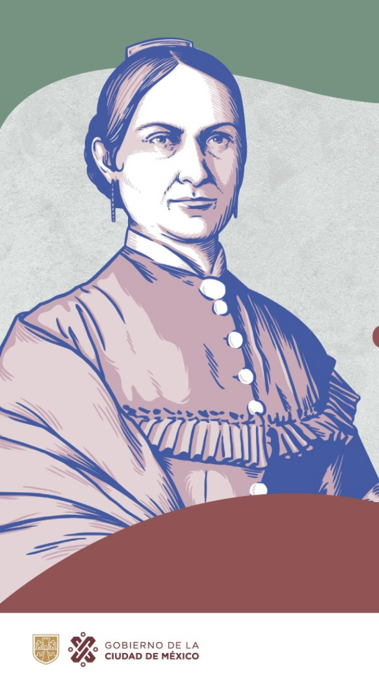

Aniversario del nacimiento de Josefa Ortiz de Domínguez 8 de septiembre (1768).
|
Conocida como "La Corregidora", fue una pieza clave y heroína del inicio de la Independencia de México al dar el aviso de que la conspiración había sido descubierta.
|
- Nombre completo: María Josefa Crescencia Ortiz Téllez-Girón.
- Lugar de nacimiento: Valladolid (hoy Morelia, Michoacán) o la Ciudad de México, según distintas fuentes históricas.
- Rol histórico: Fue una patriota e insurgente clave en la Independencia de México.
- Conspiración de Querétaro: Participó activamente en las juntas secretas organizadas en su casa junto con su esposo, el corregidor Miguel Domínguez.
- El aviso decisivo: En septiembre de 1810, al ser descubierta la conspiración, alertó a tiempo a los insurgentes. Esto permitió adelantar el levantamiento armado encabezado por Miguel Hidalgo.
- Fallecimiento: Murió el 2 de marzo de 1829 en la Ciudad de México.
Datos curiosos del 8 de septiembre
El día de Star Trek: Aunque no es un festejo oficial de la ONU, los fanáticos celebran el Star Trek Day el 8 de septiembre porque en 1966 se emitió por televisión el primer episodio de la serie original.
La Universidad de Harvard: El 8 de septiembre de 1636 se fundó en Estados Unidos la prestigiosa Universidad de Harvard.
|

|